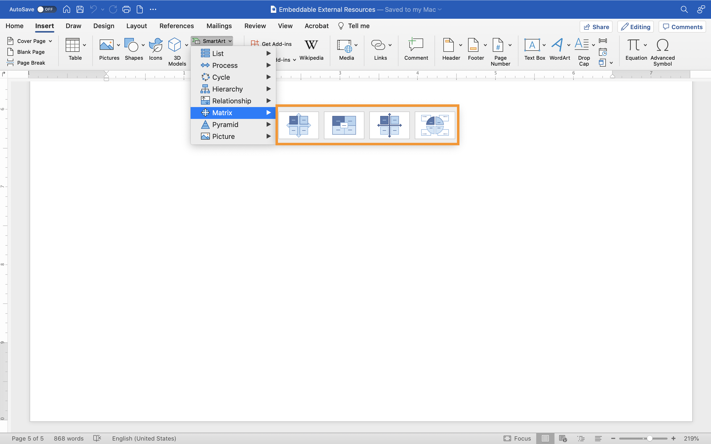

Using SmartArt Graphic to visualize Merrill’s First Principle Instructional Theory
By May Matti
If you want to start from scratch, open a new word document or use an existing one. Recommendation, it is preferred to use a new word to practice several times until you master the skill required to use the desired graphic. Then, you can apply the steps to an existing document.
Select the insert tab which is the second tab in the upper left hand of the word document to find the SmartArt option.

From the insert tab, look for SmartArt Graphic from the illustration group.

From the dropdown of the SmartArt Graphic dialog box, select the layout type that you want to use for your illustration.
Your SmartArt graphic layout should reflect what you want to convey and how you want to present the information. The SmartArt graphic has several layouts that you can use to describe the five steps of Merrill’s First Principle visually.
These are the layouts.
- List
- Process
- Cycle
- Hierarchy
- Relationship
- Metrix
- Pyramid
- Picture
Each layout has a different purpose to introduce information.
For example, select the Matrix type to visualize Merrill’s First Principle.

Once you selected the Matrix layout as the desired graphic, next add text to the shapes by clicking directly on the placeholders on the shapes. In the “Text” box type the text that you want to add.


The default color scheme can be changed by clicking on Change Colors option in the SmartArt Design tab. Make sure that the new color best matches the formatting requirements of your document.
Scan through the different color themes to see the SmartArt update in the live preview. Then select the Accent colors to apply the preferred color.


If you are not satisfied with the layout style you have chosen, you can apply a different style to your exciting graphic. Layout styles differ to include a range of effects for shapes, for example, 3D effects that will enhance the look of your graphic. Also, changing the style of the layout will not affect the structure of the Matrix.
From the SmartArt Design tab click on More in the style group to display the gallery of the available styles that align with your document.
For example, choose the second option from the 3D design Matrix layouts.


Finally, save your document.
For more information visit this website.
Microsoft support